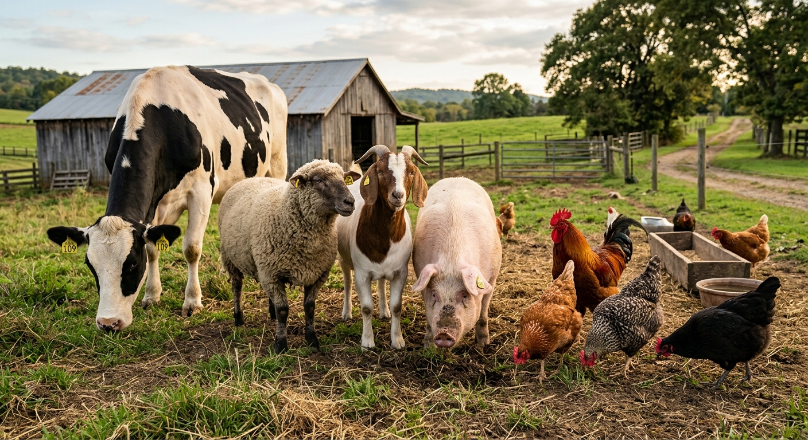

Turning Animal Science Into Better Agriculture.
Zootech transforms scientific research into practical technologies and solutions for livestock and agriculture.

Built from research. Focused on impact.
Zootech began with years of Animal Science research, dedicated to understanding the intricate biological systems that underpin agricultural success. Our foundation is built on rigorous academic inquiry and field observation.
We exist to bridge the gap between academic discovery and practical application. Our mission is to turn good science into useful technology, providing tangible solutions that enhance efficiency, sustainability, and yield for agricultural producers worldwide.
Science focused on real agricultural problems.
Animal Nutrition
Optimizing feed conversion ratios and investigating novel, sustainable nutrient sources to improve metabolic efficiency and reduce environmental impact.
Livestock Production
Developing advanced methodologies for ethical and efficient herd management, utilizing predictive modeling to forecast growth and yield metrics.
Animal Health
Pioneering immunological research and non-invasive diagnostic tools to preemptively identify and mitigate disease vectors in high-density farming.
Agricultural Technology
Integrating sensor networks and automated data collection systems into rural infrastructure to provide real-time, actionable insights for producers.
Research doesn't stop in the laboratory.
Research
Fundamental biological and systematic investigation.
Develop
Translating data into viable technological prototypes.
Validate
Rigorous field testing in diverse agricultural environments.
Deploy
Implementing scaled solutions for end-user impact.
Better science can create better agricultural outcomes.
Yield Optimization
Data-driven protocols have demonstrated up to 15% increases in feed conversion efficiency in controlled trials.
Resource Efficiency
Precision technology reduces water and supplemental feed waste, lowering operational overhead and environmental footprint.
Herd Resilience
Early-warning health monitoring systems decrease mortality rates and minimize the need for broad-spectrum interventions.
Data Integrity
Establishing verifiable data pipelines from farm to processor, enhancing traceability and compliance reporting.
A closer look at what we're building.

Project ZooTech
An ongoing field study assessing the viability of low-energy, mesh-networked biometric sensors deployed on free-range livestock. BioNode aims to provide continuous physiological data without disrupting animal behavior, effectively turning the herd into a cohesive data-generating entity.
Learn About This arrow_forwardLet's turn research into something useful.
We actively seek partnerships with academic institutions, agricultural producers, and technology integrators to further our mission of applied animal science.
Research Partnerships
Collaborate on joint studies, field trials, and academic publications.
Funding & Grants
Explore co-funding opportunities for large-scale agricultural innovation projects.
Commercial Partnerships
License our technologies or co-develop custom solutions for your operations.
Stay Updated on our Research
Receive preprint notifications, field trial whitepapers, and updates on our innovations directly to your inbox.